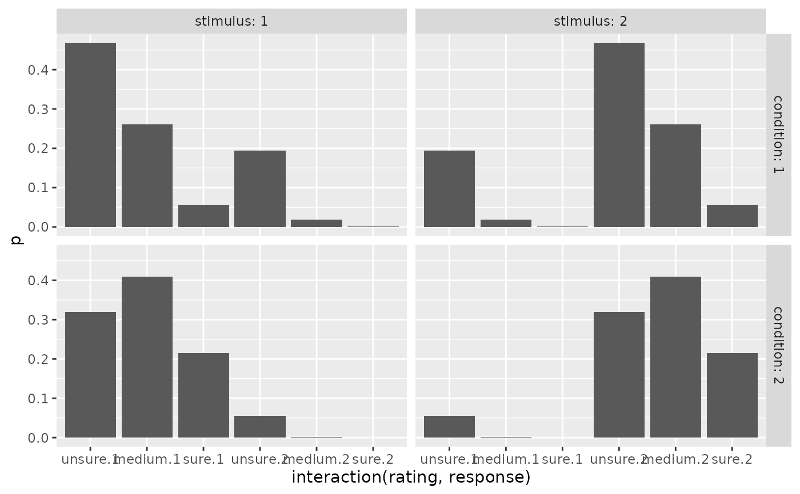
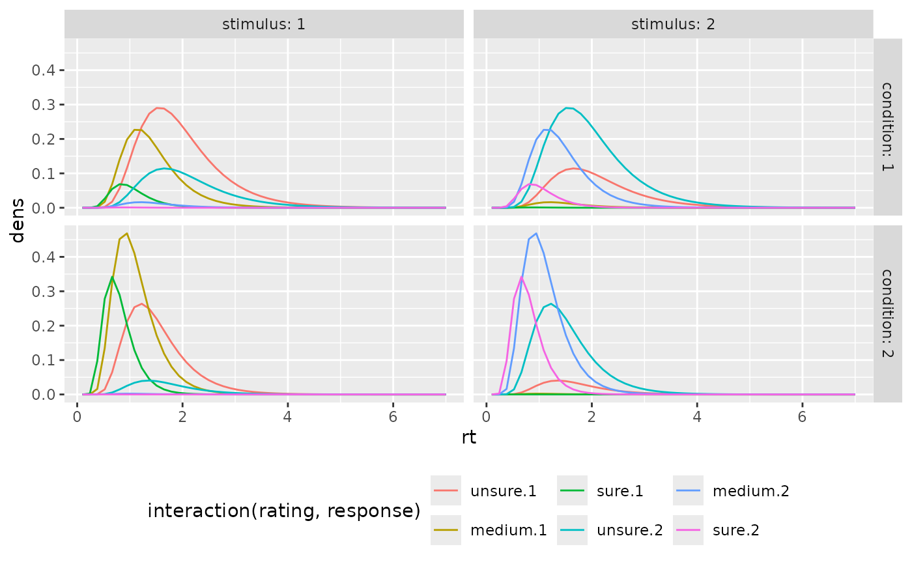
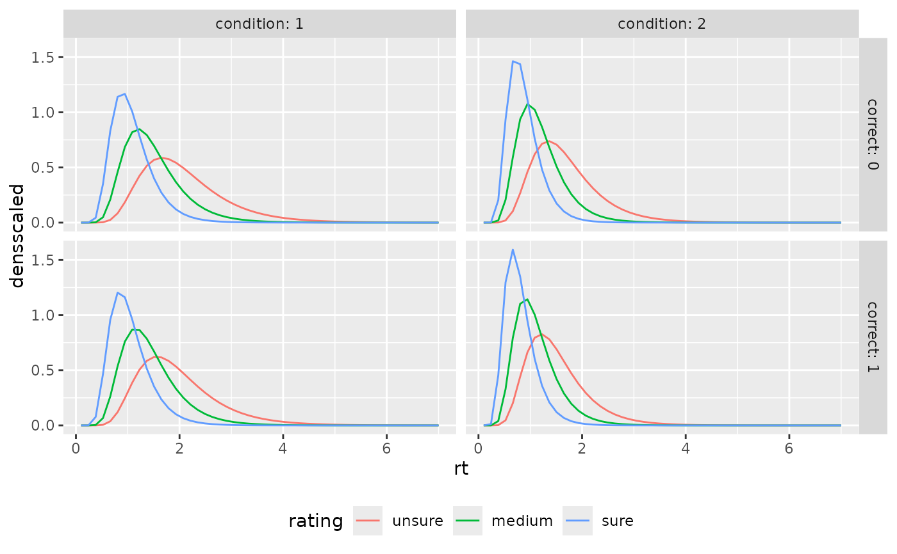

Prediction of Confidence Rating and Reaction Time Distribution in the multiple-threshold log-normal noise race model
Source:R/predictratingdist_MTLNR.R
predictMTLNR.RdpredictMTLNR_Conf predicts the categorical response distribution of
decision and confidence ratings, predictMTLNR_RT computes the
RT distribution (density) in the multiple-threshold log-normal noise
race model (Reynolds et al., 2020), given specific parameter
constellations. See dMTLNR for more information about the models
and parameters.
Usage
predictMTLNR_Conf(paramDf, maxrt = Inf, subdivisions = 100L,
stop.on.error = FALSE, .progress = TRUE)
predictMTLNR_RT(paramDf, maxrt = 9, subdivisions = 100L, minrt = NULL,
scaled = FALSE, DistConf = NULL, .progress = TRUE)Arguments
- paramDf
a list or data frame with one row. Column names should match the following names (see dMTLNR): For different stimulus quality/mean drift rates, names should be
v1,v2,v3,.... (corresponding to the mean parameter for the accumulation rate for the stimulus-corresponding accumulator, thereforemu_v1andmu_v2are not used in this context but replaced by the parameterv);mu_d1andmu_d2correspond to the mean parameters for boundary distance of the two accumulators;s1ands2correspond to the variance parameters of the first and second boundary hitting time;rhocorresponds to the correlation of boundary hitting times. Note thats_v1,s_v2,rho_v,s_d1,s_d2, andrho_dare not used in this context, although the accumulation rate-related parameters can be used to replace the above-mentioned variance parameters. Additionally, the confidence thresholds should be given by names withthetaUpper1,thetaUpper2,...,thetaLower1,... or, for symmetric thresholds only bytheta1,theta2,.... (see Details for the correspondence to the data)- maxrt
numeric. The maximum RT for the integration/density computation. Default: 15 (for
predictMTLNR_Conf(integration)), 9 (forpredictMTLNR_RT).- subdivisions
integer(default: 100). ForpredictMTLNR_Confit is used as argument for the inner integral routine. ForpredictMTLNR_RTit is the number of points for which the density is computed.- stop.on.error
logical. Argument directly passed on to integrate. Default is FALSE, since the densities invoked may lead to slow convergence of the integrals (which are still quite accurate) which causes R to throw an error.
- .progress
logical. If TRUE (default) a progress bar is drawn to the console.
- minrt
numeric or NULL(default). The minimum rt for the density computation.
- scaled
logical. For
predictMTLNR_RT. Whether the computed density should be scaled to integrate to one (additional columndensscaled). Otherwise the output contains only the defective density (i.e. its integral is equal to the probability of a response and not 1). IfTRUE, the argumentDistConfshould be given, if available. Default:FALSE.- DistConf
NULLordata.frame. Adata.frameormatrixwith column names, giving the distribution of response and rating choices for different conditions and stimulus categories in the form of the output ofpredictMTLNR_Conf. It is only necessary, ifscaled=TRUE, because these probabilities are used for scaling. Ifscaled=TRUEandDistConf=NULL, it will be computed with the functionpredictMTLNR_Conf, which takes some time and the function will throw a message. Default:NULL
Value
predictMTLNR_Conf returns a data.frame/tibble with columns: condition, stimulus,
response, rating, correct, p, info, err. p is the predicted probability of a response
and rating, given the stimulus category and condition. info and err refer to the
respective outputs of the integration routine used for the computation.
predictMTLNR_RT returns a data.frame/tibble with columns: condition, stimulus,
response, rating, correct, rt and dens (and densscaled, if scaled=TRUE).
Details
The function predictMTLNR_Conf consists merely of an integration of
the response time density, dMTLNR, over the
response time in a reasonable interval (0 to maxrt). The function
predictMTLNR_RT wraps these density
functions to a parameter set input and a data.frame output.
For the argument paramDf, the output of the fitting function fitRTConf
with the respective model may be used.
The names of the accumulation rate parameters differ from those used in
dMTLNR because the accumulation rates for the two options depend
on stimulus and condition. Here, the mean parameter for the accumulation rate
of the correct accumulator is v (v1, v2,... respectively) in paramDf
and the other one has a mean parameter of 0.
Note
Different parameters for different conditions are only allowed for drift rate,
v. All other parameters are used for all
conditions.
References
Reynolds, A., Kvam, P. D., Osth, A. F., & Heathcote, A. (2020). Correlated racing evidence accumulator models. Journal of Mathematical Psychology, 96, 102331. doi: doi: 10.1016/j.jmp.2020.102331
Examples
# 1. Define some parameter set in a data.frame
paramDf <- data.frame(v1=0.5, v2=1.0, t0=0.1, st0=0,
mu_d1=1, mu_d2=1,
s1=0.5, s2=0.5, rho=0.2,
theta1=0.8, theta2=1.5)
# 2. Predict discrete Choice x Confidence distribution:
preds_Conf <- predictMTLNR_Conf(paramDf, maxrt=7, subdivisions=50)
head(preds_Conf)
#> condition stimulus response correct rating p info err
#> 1 1 1 1 1 1 0.46765851 OK 7.238266e-05
#> 2 2 1 1 1 1 0.31898699 OK 2.250406e-06
#> 3 1 2 1 0 1 0.19460644 OK 1.672521e-07
#> 4 2 2 1 0 1 0.05470778 OK 1.205534e-06
#> 5 1 1 2 0 1 0.19460644 OK 1.672521e-07
#> 6 2 1 2 0 1 0.05470778 OK 1.205534e-06
# 3. Compute RT density
preds_RT <- predictMTLNR_RT(paramDf, maxrt=7, subdivisions=50)
# same output with scaled density column:
preds_RT <- predictMTLNR_RT(paramDf, maxrt=7, subdivisions=50,
scaled=TRUE, DistConf = preds_Conf)
head(preds_RT)
#> condition stimulus response correct rating rt dens
#> 1 1 1 1 1 1 0.1000000 0.000000e+00
#> 2 1 1 1 1 1 0.2408163 1.033943e-08
#> 3 1 1 1 1 1 0.3816327 6.292158e-05
#> 4 1 1 1 1 1 0.5224490 2.452989e-03
#> 5 1 1 1 1 1 0.6632653 1.749839e-02
#> 6 1 1 1 1 1 0.8040816 5.609321e-02
#> densscaled
#> 1 0.000000e+00
#> 2 2.210893e-08
#> 3 1.345460e-04
#> 4 5.245256e-03
#> 5 3.741702e-02
#> 6 1.199448e-01
# \donttest{
# produces a warning, if scaled=TRUE and DistConf missing
preds_RT <- predictMTLNR_RT(paramDf, maxrt=7, subdivisions=50,
scaled=TRUE)
#> scaled is TRUE and DistConf is NULL. The rating distribution will be computed, which will take additional time.
# }
# \donttest{
# Example of visualization
library(ggplot2)
preds_Conf$rating <- factor(preds_Conf$rating, labels=c("unsure", "medium", "sure"))
preds_RT$rating <- factor(preds_RT$rating, labels=c("unsure", "medium", "sure"))
ggplot(preds_Conf, aes(x=interaction(rating, response), y=p))+
geom_bar(stat="identity")+
facet_grid(cols=vars(stimulus), rows=vars(condition), labeller = "label_both")

ggplot(preds_RT, aes(x=rt, color=interaction(rating, response), y=dens))+
geom_line(stat="identity")+
facet_grid(cols=vars(stimulus), rows=vars(condition), labeller = "label_both")+
theme(legend.position = "bottom")

ggplot(aggregate(densscaled~rt+correct+rating+condition, preds_RT, mean),
aes(x=rt, color=rating, y=densscaled))+
geom_line(stat="identity")+
facet_grid(cols=vars(condition), rows=vars(correct), labeller = "label_both")+
theme(legend.position = "bottom")

# }
# \donttest{
# Use PDFtoQuantiles to get predicted RT quantiles
# (produces warning because of few rt steps (--> inaccurate calculations))
PDFtoQuantiles(preds_RT, scaled = FALSE)
#> Warning: There are only 50 rows for at least one subgroup of the data set.
#> Consider refining the rt-grid for more accurate computations.
#> # A tibble: 120 × 7
#> condition stimulus response correct rating p q
#> <int> <dbl> <dbl> <dbl> <fct> <dbl> <dbl>
#> 1 1 1 1 1 unsure 0.1 1.09
#> 2 1 1 1 1 unsure 0.3 1.51
#> 3 1 1 1 1 unsure 0.5 1.79
#> 4 1 1 1 1 unsure 0.7 2.21
#> 5 1 1 1 1 unsure 0.9 2.92
#> 6 1 1 1 1 medium 0.1 0.804
#> 7 1 1 1 1 medium 0.3 1.09
#> 8 1 1 1 1 medium 0.5 1.37
#> 9 1 1 1 1 medium 0.7 1.65
#> 10 1 1 1 1 medium 0.9 2.21
#> # ℹ 110 more rows
# }
# Example with asymmetric confidence thresholds
paramDf_asym <- data.frame(v1=0.5, v2=1.0, t0=0.1, st0=0,
mu_d1=1, mu_d2=1,
s1=0.5, s2=0.5, rho=0.2,
thetaLower1=0.5, thetaLower2=1.2,
thetaUpper1=0.7, thetaUpper2=1.8)
preds_Conf_asym <- predictMTLNR_Conf(paramDf_asym, maxrt=7, subdivisions=50)
head(preds_Conf_asym)
#> condition stimulus response correct rating p info err
#> 1 1 1 1 1 1 0.28529543 OK 4.470529e-08
#> 2 2 1 1 1 1 0.15767025 OK 6.721306e-06
#> 3 1 2 1 0 1 0.15760155 OK 5.377537e-08
#> 4 2 2 1 0 1 0.04806803 OK 1.215319e-06
#> 5 1 1 2 0 1 0.18563319 OK 4.151935e-08
#> 6 2 1 2 0 1 0.05332629 OK 1.364018e-06
# Example with multiple conditions
paramDf_multi <- data.frame(v1=0.3, v2=0.6, v3=1.2, t0=0.1, st0=0,
mu_d1=1, mu_d2=1,
s1=0.5, s2=0.5, rho=0.2,
theta1=0.8, theta2=1.5)
preds_Conf_multi <- predictMTLNR_Conf(paramDf_multi, maxrt=7, subdivisions=50)
head(preds_Conf_multi)
#> condition stimulus response correct rating p info err
#> 1 1 1 1 1 1 0.4674598 OK 5.029158e-09
#> 2 2 1 1 1 1 0.4526283 OK 5.287527e-06
#> 3 3 1 1 1 1 0.2346539 OK 5.435887e-05
#> 4 1 2 1 0 1 0.2763932 OK 2.497661e-08
#> 5 2 2 1 0 1 0.1579229 OK 7.914209e-05
#> 6 3 2 1 0 1 0.0281067 OK 4.146674e-07